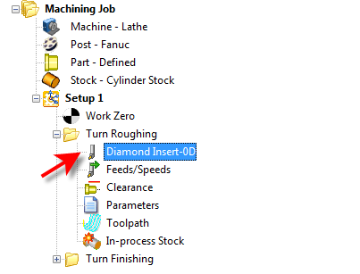
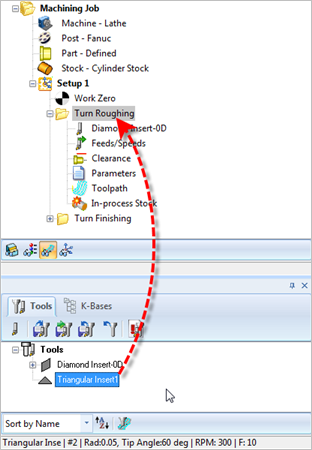
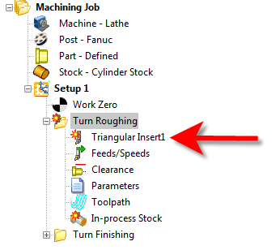
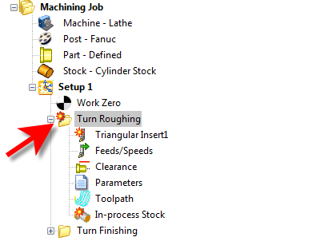
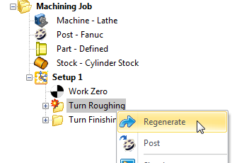
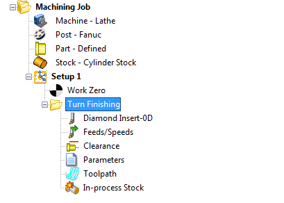

Machining Operations can be edited by using the Machining Browser. Each machining operation is represented as a folder in the browser. In the expanded state of this folder icon, five icons representing five different objects that make up the operation are displayed. These are:
|
Double clicking on Tool, Feeds/Speeds, Clearance Geometry or Parameters icons gives you an opportunity to edit the object.
|
Right mouse click or double clicking a specific icon for example the Tool icon would bring up the Create/Edit Tool dialog, upon which you can substitute the current tool with another or edit the parameters of the current tool.  Right-Mouse click or Double-click on an Operation Icon from the Machining Browser |
The tool can also be edited by dragging and dropping it from the Tools tab to of the Machining Objects Browser to the operation folder in the Machining Browser.  Drag & Drop Editing an Operation from the Machining Browser  Drag & Drop Editing an Operation from the Machining Browser |
If any of the objects that make up the operation were to be edited after the toolpath was generated, the operation will be flagged dirty as needing re-computation. TURN Module indicates such a condition by adding a red flag to the operation folder (i.e., ). The object that necessitated this re-computation is also displayed with a red flag (i.e., ). An example of this is shown below. In this case the tool used in the operation was edited after the machining operation was created and so is shown differently, as is the operation.  Indicator that an Operation Needs to be Regenerated |
To regenerate an operation that is flagged dirty, first select the operation folder, right click and select Regenerate as shown in the example below.  Regenerating an Operation from the Machining Browser The toolpath is now regenerated with the modified settings.  The toolpath is now regenerated with the modified settings |